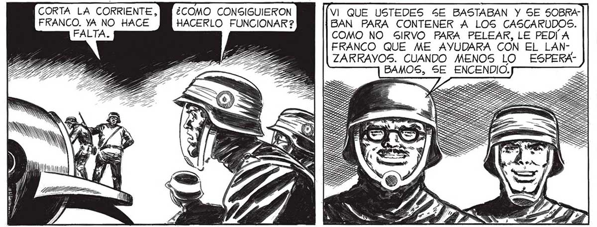
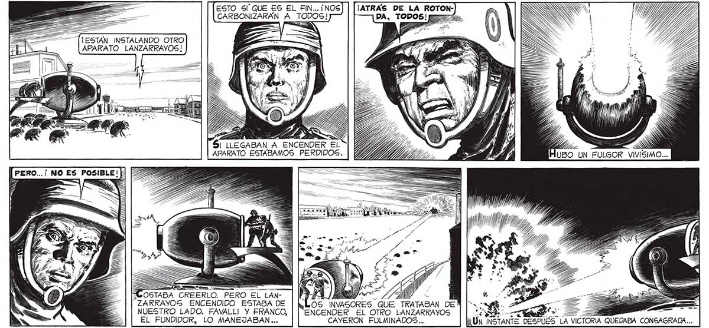

98 ESTO SÍ QUE ES EL FIN...¡NOS] | [¡ATRAÁS DE LA ROTONDA, TODOS! pz CARBONIZARAÁN A TODOS! ¡ESTAN INSTALANDO OTRO APARATO LANZARRAYOS! $1 LLEGABAN A ENCENDER EL APARATO ESTABAMOS PERDIDOS. OSTABA CREERLO. PERO EL LAN"ZARRAYOS ENCENDIDO ESTABA DE palpa Es “Los INVASORES QUE TRATABAN DE! NUESTRO LADO. FAVALLI Y ERANCO, | ENCENDER EL OTRO LANZARRAVOS EL FUNDIDOR, LO MANEJABAN... CAYERON FULMINADOS... CORTA LA CORRIENTE, MN ¿COMO CONSIGUIERON VI QUE USTEDES SE BASTABAN Y SE SOBRA" FRANCO. YA NO HACE HACERLO FUNCIONAR ? BAN PARA CONTENER A LOS CASCARUDOS. COMO NO SIRVO PARA PELEAR, LE PEDIA FRANCO QUE ME AYVUDARA CON EL LAN-' ZARKAYOS. CUANDO MENOS LO ESPERABAMOS, SE ENCENDIO. | lll W IMP ill) Huso > UN FULSOR VIVISIMO... ESTUPENDO, PROFESOR: Sl NO HUBIERA SIDO POR USTEDES A ESTAS HORAS ESTARIAMOS FAVALLI SE QUI- COCINADOS. DE AHORA EN ADELANTE CREO TABA MERITOS : EL SUYO Y EL DE FRANCO HA” BÍA SIDO UN ESFUERZO DE IMAGINACION ¿ SOLO CEREBROS DE EXCEPCIÓN PODIAN COMPRENTIEMPO EL TERRIBLE APARATO CAPTURADO AL ENEMIGO. QUE TODO SERA MAS FACIL...

